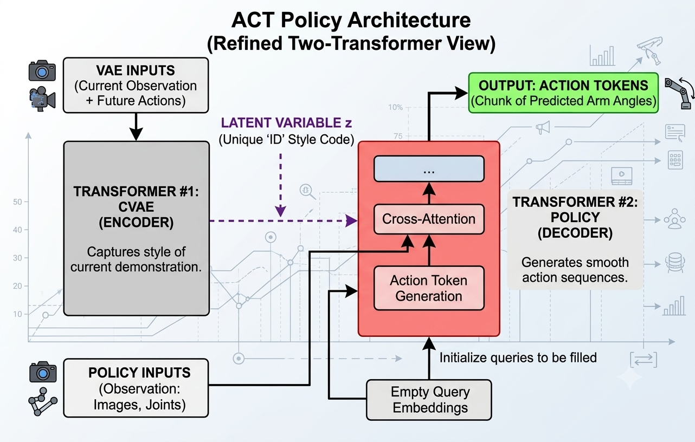

Robot Learning
ACT
Action Chunking with Transformers for robot control.
This policy was created to reduce one of the problems with single-step behaviour cloning. The main concept of ACT is that its output is a chunk of many future actions, unlike basic behaviour cloning, where the policy usually predicts only one action at a time.
Why Is ACT Better?
But how is this better than the behaviour cloning method? In basic behaviour cloning, we produce one action after we receive one observation. Imagine our robot has some physical error, such as a bad motor, and it does not move to the exact position that we define. Then those errors can keep accumulating until they become large.
On the other hand, predicting actions in chunks gives the policy a short plan instead of a single isolated step. The robot still executes actions one by one, but the model can plan over a longer horizon and can replan less often, which helps reduce compounding error and makes the motion smoother.
That was the main idea of this policy.
Architecture

The high level architecture uses a CVAE-style encoder and a transformer decoder. During training, the encoder reads the demonstration information, such as joint states and action chunks, and infers a latent variable z. The decoder then conditions on z and the current observations to predict the next action chunk.
What Is z?
Since the data is created by humans, it is not perfectly consistent. For example, when a human teaches the robot to cook pizza 200 times, the angle of the human's arms might vary. A high level way to understand z is that it captures demonstration style or variation. One value of z might represent one way of moving, while another value might represent a different trajectory style.
Then, the model initializes empty action queries, ready to be filled with action tokens. Those queries, together with the latent z and the input observations, go into the transformer decoder. The decoder fills the queries with action tokens, which become the predicted action chunk.
Example Code
This full example trains an ACT policy from expert action chunks, then renders a rollout.
View full ACT example
import numpy as np
import torch
import torch.nn as nn
import torch.optim as optim
import mujoco
import imageio
XML = """
<mujoco>
<option timestep="0.02" gravity="0 0 -9.81"/>
<worldbody>
<light pos="0 0 3"/>
<camera name="cam" pos="1.2 -1.2 0.9" xyaxes="1 1 0 -0.4 0.4 1"/>
<geom type="box" pos="0 0 0" size="0.6 0.4 0.03" rgba="0.6 0.6 0.6 1"/>
<body name="cube" pos="-0.25 0 0.08">
<joint name="cube_free" type="free"/>
<geom type="box" size="0.04 0.04 0.04" rgba="0.1 0.4 1 1"/>
</body>
<body name="gripper" mocap="true" pos="-0.25 0 0.25">
<geom type="sphere" size="0.035" rgba="1 0.2 0.2 1"/>
</body>
<geom type="cylinder" pos="0.25 0 0.04" size="0.06 0.005" rgba="0.2 1 0.2 1"/>
</worldbody>
</mujoco>
"""
HORIZON = 8
EXECUTE_STEPS = 4
def get_state(gripper, cube, target):
return np.concatenate([gripper, cube, target]).astype(np.float32)
def set_cube_pos(data, pos):
data.qpos[:3] = pos
data.qpos[3:7] = np.array([1, 0, 0, 0])
def expert_action(gripper, cube, target):
above_cube = cube + np.array([0, 0, 0.18])
grasp_pos = cube + np.array([0, 0, 0.06])
above_target = target + np.array([0, 0, 0.18])
place_pos = target + np.array([0, 0, 0.08])
holding = cube[2] > 0.12
close_xy = np.linalg.norm(gripper[:2] - cube[:2]) < 0.03
if not holding:
goal = grasp_pos if close_xy else above_cube
else:
goal = place_pos if np.linalg.norm(gripper[:2] - target[:2]) < 0.03 else above_target
return np.clip(goal - gripper, -0.03, 0.03).astype(np.float32)
def step_toy_world(gripper, cube, action, target, holding):
gripper = gripper + action
if np.linalg.norm(gripper - (cube + np.array([0, 0, 0.06]))) < 0.06:
holding = True
if holding:
cube = gripper - np.array([0, 0, 0.06])
if holding and np.linalg.norm(cube[:2] - target[:2]) < 0.04 and cube[2] < 0.12:
holding = False
return gripper, cube, holding
class ACTPolicy(nn.Module):
def __init__(self):
super().__init__()
self.net = nn.Sequential(
nn.Linear(9, 64),
nn.ReLU(),
nn.Linear(64, 64),
nn.ReLU(),
nn.Linear(64, HORIZON * 3)
)
def forward(self, state):
action_chunk = self.net(state)
return action_chunk.reshape(-1, HORIZON, 3)
# ------------------------------------------------------------
# 1. Generate expert action chunks
# ------------------------------------------------------------
target = np.array([0.25, 0.0, 0.08])
all_states = []
all_chunks = []
for episode in range(100):
cube = np.array([
np.random.uniform(-0.35, -0.15),
np.random.uniform(-0.12, 0.12),
0.08
])
gripper = cube + np.array([0, 0, 0.22])
holding = False
states = []
actions = []
for t in range(140):
state = get_state(gripper, cube, target)
action = expert_action(gripper, cube, target)
states.append(state)
actions.append(action)
gripper, cube, holding = step_toy_world(
gripper, cube, action, target, holding
)
states = np.array(states)
actions = np.array(actions)
for i in range(len(states) - HORIZON):
all_states.append(states[i])
all_chunks.append(actions[i:i + HORIZON])
all_states = torch.tensor(np.array(all_states), dtype=torch.float32)
all_chunks = torch.tensor(np.array(all_chunks), dtype=torch.float32)
# ------------------------------------------------------------
# 2. Train ACT with supervised learning
# ------------------------------------------------------------
policy = ACTPolicy()
optimizer = optim.Adam(policy.parameters(), lr=1e-3)
loss_fn = nn.MSELoss()
for epoch in range(300):
pred_chunks = policy(all_states)
loss = loss_fn(pred_chunks, all_chunks)
optimizer.zero_grad()
loss.backward()
optimizer.step()
if epoch % 50 == 0:
print(f"epoch {epoch}, loss = {loss.item():.5f}")
# ------------------------------------------------------------
# 3. Roll out ACT policy
# ------------------------------------------------------------
model = mujoco.MjModel.from_xml_string(XML)
data = mujoco.MjData(model)
renderer = mujoco.Renderer(model, height=480, width=640)
frames = []
cube = np.array([-0.28, 0.08, 0.08])
gripper = cube + np.array([0, 0, 0.22])
holding = False
for t in range(0, 160, EXECUTE_STEPS):
state = torch.tensor(get_state(gripper, cube, target)).unsqueeze(0)
with torch.no_grad():
action_chunk = policy(state).squeeze(0).numpy()
for action in action_chunk[:EXECUTE_STEPS]:
action = np.clip(action, -0.03, 0.03)
gripper, cube, holding = step_toy_world(
gripper, cube, action, target, holding
)
data.mocap_pos[0] = gripper
set_cube_pos(data, cube)
mujoco.mj_forward(model, data)
renderer.update_scene(data, camera="cam")
frames.append(renderer.render())
imageio.mimsave("act_pickplace.mp4", frames, fps=30)
print("Saved act_pickplace.mp4")This is the part that I want you to look into:
class ACTPolicy(nn.Module):
def __init__(self):
super().__init__()
self.net = nn.Sequential(
nn.Linear(9, 64),
nn.ReLU(),
nn.Linear(64, 64),
nn.ReLU(),
nn.Linear(64, HORIZON * 3)
)
def forward(self, state):
action_chunk = self.net(state)
return action_chunk.reshape(-1, HORIZON, 3)
Notice that the final layer maps 64 hidden features to HORIZON * 3 numbers. HORIZON
is the number of future actions that the ACT policy returns. After the reshape, the output is an action chunk
with shape (HORIZON, 3), not a single action like basic behaviour cloning.